阴阳师手游-部分模块详细拆解
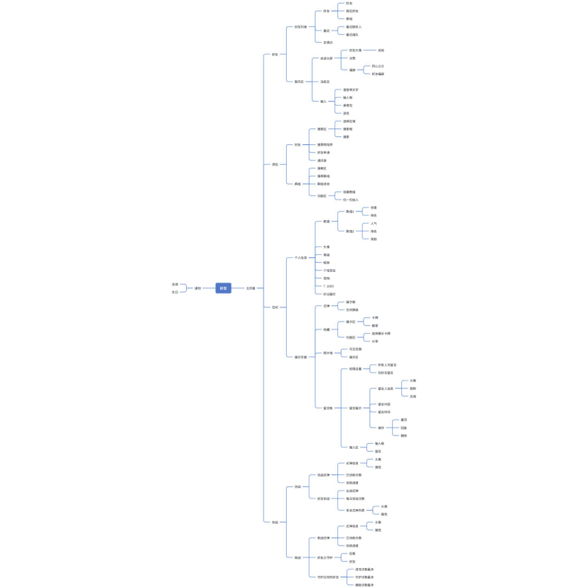
1. 个人信息页面
1.1 头像
1.1.1 图片展示
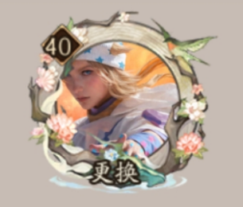 | 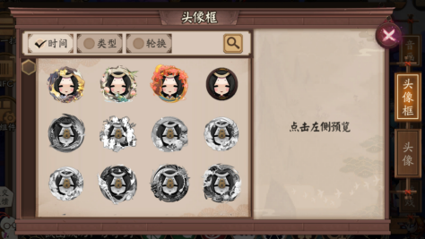 |
1.1.2 分析
设计目的
1. 降低社交认知成本
2. 提升用户粘性
3. 刺激消费
设计思路
建立高效的身份识别系统，降低社交成本
1. 视觉身份标识：将头像/头像框设计为即时的战力与资历说明书，使玩家在社交、排行榜等界面能在1秒内完成实力评估与互动决策（如组队、挑战）；
2. 营造归属感：通过公会限定、活动专属等设计，制造“圈内人”凭证，佩戴相同标识能瞬间激发群体认同与共荣誉感，强化社群凝聚力；
强化情感联结，提升用户粘性
1. 个性化引导：模块化的设计将头像和头像框分开进行设置，降低自定义门槛，引导玩家形成习惯，提高玩家投入的时间成本，强化该环节的成就感和价值感；
2. 绑定游戏内容：将头像作为游戏历程的奖励，让玩家的每一次重大投入（时间、技巧）都转化为一个可展示的“藏品”，玩家看到该头像都会回想起获取时的努力与成就感，产生和游戏个人历史层面的情感联结；
刺激消费
1. 提供预览区域：图片预览提供实时的视觉刺激，营造“已拥有”的错觉，刺激玩家的占有欲，降低决策风险，刺激玩家的即刻消费欲望；
2. 建立头像体系：已获得的稀有头像排在普通头像前面，通过视觉上数量和美术效果的对比制造“普通”与“稀有”的阶级感，激发攀比与收集欲望，引导玩家进行消费；
3. 长期价值：可以与各种活动、联动、成就和付费内容进行绑定，将消费深度植入玩家的成长路径中，使付费成为追求终极目标的自然选择，提供了长远的消费渠道；
系统概述
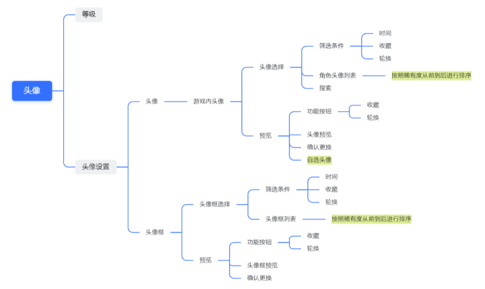
1.2 名帖
1.2.1 图片展示
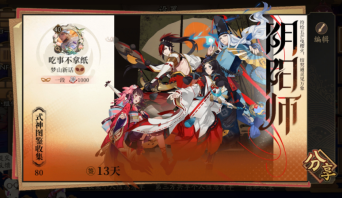 | 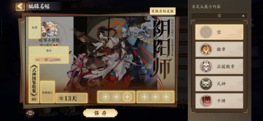 |
1.2.2 分析
设计目的
1. 建立深度社交
2. 提升用户粘性
3. 刺激多维消费
设计思路
进一步筛选，建立深度社交
1. 提供信任的凭证：名帖中的段位、图鉴收集和连续签到是需要长期、多维投入才能积累的硬核数据。在组建高难副本固定队、选择公会核心成员时，名帖提供了远比头像更可靠、更详细的 “信用报告”，极大降低了深度合作（高投入社交）的试错风险, 为深度社交提供可靠的信任基础；
2. 社交筛选：将游戏核心内容提炼成数据，玩家可以快速扫描关键词（如段位、收集度）筛选社交对象，大幅提升社交互动的效率，促进更高质量的深度社交；
可视化投入成本，提升用户粘性
1. 量化沉没成本：名帖系统将玩家所有的游戏成就聚合成一张公开展示的名片，玩家考虑放弃游戏时会直观面对投入陈本的数据，提高了用户流失的心理门槛，提高留存率；
2. 游戏内容绑定：将游戏的各种内容设计为可以增长的数据，推动玩家为追求数字增长而维持日常活跃优化名帖展示，在持续的累积中获得稳定成就感，提高每日在线时长；
刺激多维消费
1. 名帖皮肤：可以更换的展示框架，能在视觉上让玩家的所有硬核数据展示看起来更加耀眼，让玩家产生一种赋能于所有既有资产的价值感知，推动消费；
2. 精细化消费：拆解成多个可装饰模块，相当于构建了一个由基础数据和自定义商品构成的隐形商城，满足玩家深层的策划和创造欲望，持续刺激玩家消费的欲望；
系统概述
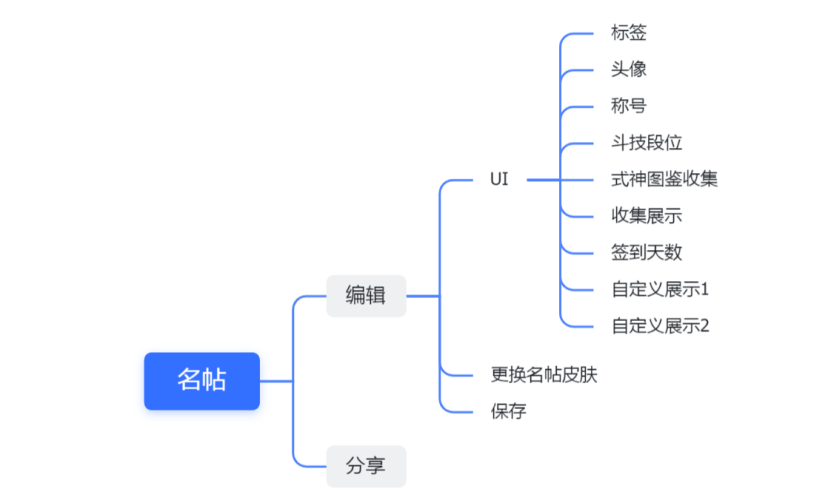
1.3 昵称
1.3.1 图片
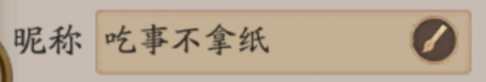
1.3.2 分析
功能分析
1. 特点：唯一性、不容易更改（需要花钱）
2. 场景：名片、结算、战斗、聊天等
设计目的
1. 建立社交锚点
2. 创建消费点
设计思路
建立社交锚点
1. 命名仪式化：要求唯一昵称，让玩家投入时间精力构思专属名称，经历命名的仪式，产生初始拥有感，一定程度上降低新用户流失率；
2. 增强记忆成本：昵称会在所有社交场景强制显示，玩家在长期社交中不断被他人以昵称称呼建立起社交记忆，形成身份认同，提升玩家的回归率；
付费修改，创建消费点
定价修改昵称，当玩家因为情绪变化（如情感破裂）产生改名需求时，有慎重决策、重新开始的心理安慰，创造小额付费流；
系统概述
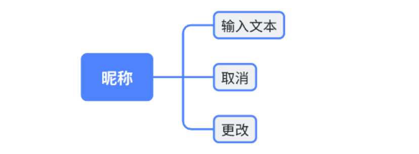
1.4 生日
1.4.1 图片
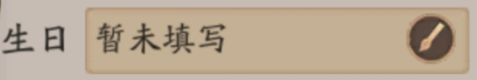
1.4.2 分析
功能分析
1. 特点：自定义；会有派对活动、特殊奖励
2. 限制：从生日开始14天期间内，90天内无法修改、一年一次
3. 场景：自行设置权限（个人信息、聊天界面、好友界面）
设计目的
1. 强化情感联结
2. 激活沉默社交、推动特殊消费
设计思路
创建游戏内的归属感，强化情感联结
1. 归属感设置：将生日的数据设置为可展示的社交元素，由式神主动举办派对送出限定礼物，将单项养成关系变成伪双向奔赴，玩家为了获得完整体验（或者资源）更愿意填写展示生日并规律性登录，增强对游戏的归属感，既获得用户数据又提升了玩家在生日周期内的登录率和活跃时长；
2. 容错机制：派对奖励和奖励发放共计28天，提供了极大的登录容错空间，避免玩家未拿到奖励的挫败感，产生损失厌恶感，提升后续参与的意愿；
激活沉默社交、推动特殊消费
设置祝福赠礼阶段（生日及前2天）好友间的赠礼行为形成惊喜和人情网络，生日的玩家获得被关注的满足感，赠礼方获得表达祝福的成就感，双方形成人情关系陷入“人情互惠”的网络；
特殊玩家（情侣/暧昧对象）会被置于一个公开的、有比较的浪漫表达场所。付费特殊礼物成为表达心意、彰显重视程度、乃至进行关系竞争的 “硬通货” ，驱动基于现实情感的定向高额消费；
系统概述
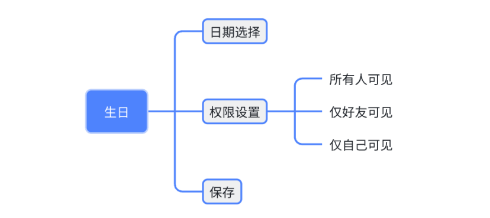
1.5 编号
1.5.1 图片
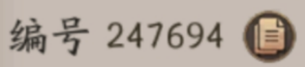
1.5.2 分析
设计目的
方便管理和定位
设计思路
强制生成并永久绑定该账户，不可修改。玩家在添加好友、举办、交易等高信任/高风险场景下保证对象的准确性，提供安全保障也降低了客服和运营成本，为安全打击违规操作提供凭证，保障虚拟经济的秩序；
系统概述
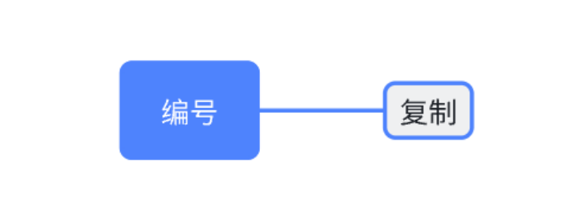
1.6 扩展包
1.6.1 图片
1.6.2 分析
设计目的
降低体验门槛
设计思路
可配置：将游戏资源模块化，标注大小和功能后果，让玩家根据自身设备条件和喜好进行下载，带来一些微妙的参与感，也降低了因为手机存储不足导致的部分玩家流失；
系统概述
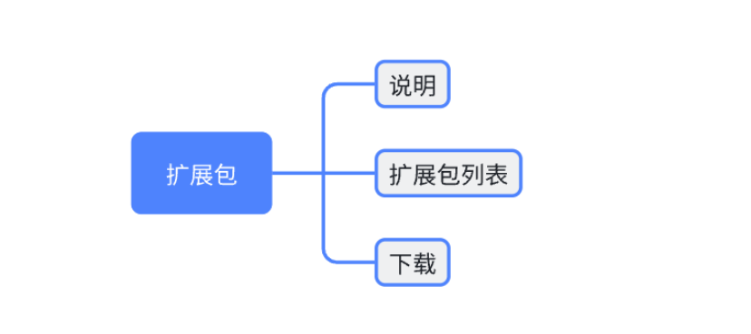
1.7 音画设置
1.7.1 图片
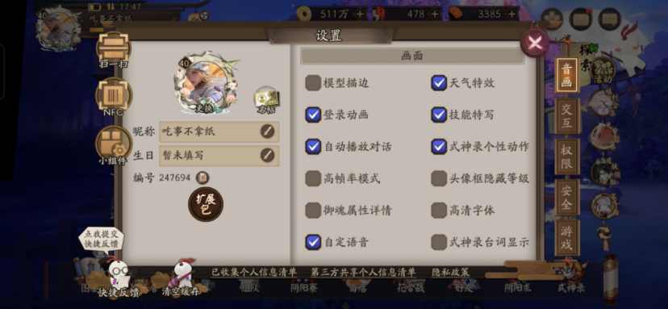
1.7.2 分析
设计目的
增强用户体验，防止用户流失
设计思路
1. 减少初期的流失：将游戏音画的体验拆成小的板块，提供可以设置的选项，玩家可以根据个人喜好和设备性能自由选择效果进行体验，降低体验门槛减少体验不好的挫败感，有效降低初期因为兼容或性能导致的用户流失；
2. 满足长期体验需求：玩家可以通过随时调节参数获得不同时段的舒适体验，减少重复操作和视听干扰带来的烦躁感，有效延长单次游戏的时长，降低长时间游戏带来的疲劳感；
系统概述
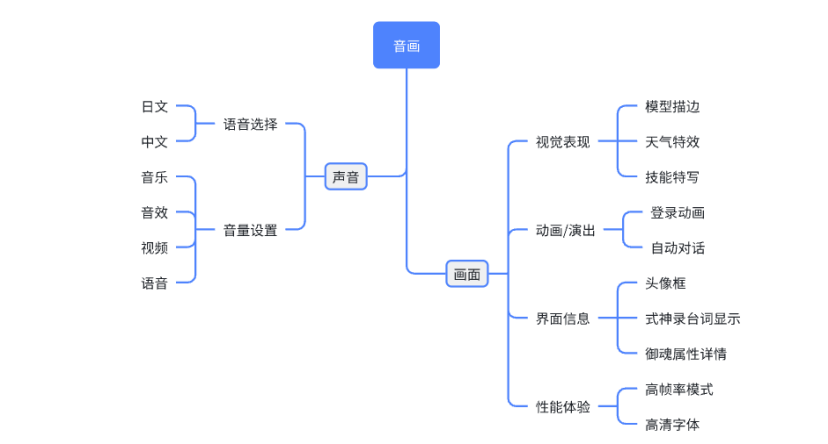
2. 好友系统
2.1 系统分析
设计目的：
1. 降低玩家进行社交相关行为的心理与操作成本，使社交成为可选而非负担（不强迫）
2. 将好友关系转化为可持续服务核心玩法的资源与协作网络（协作）
3. 为玩家提供长期、低强度的情感连接载体，增强账号的黏性（留存）
面向对象：所有玩家
系统入口：主页面→卷轴→好友
系统内容：好友聊天、添加好友、个人空间、协战设置
2.2 好友界面
2.2.1 图片
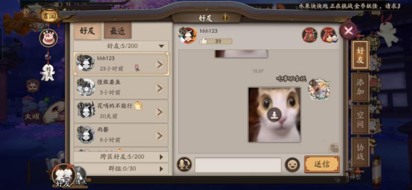
2.2.2 分析
设计目的
1. 提供便捷的沟通渠道，降低社交成本
2. 设置礼物机制，鼓励社交行为
设计思路
提供便捷的沟通渠道，降低社交成本
1. 好友列表分层：区分不同类型的社交关系，帮助玩家快速筛选出不同场景的目标联系人，了解好友的状态，高效社交；
2. 会话区：标准化的会话设计，语音转文字尽量避免了游戏内横屏打字的不便，表情包也同样是一种轻量化的表达载体，降低了沟通的门槛，避免聊天成为学习成本；
设置礼物机制，鼓励社交行为
1. 友情点：作为低成本的每日社交的“打卡”任务，鼓励玩家与好友进行至少一次的互动（赠送/接收），维持日常的社交参与；
2. 同心之兰福袋：可以互相购买赠送，但需要共同完成游戏任务获得奖励，将社交互动与核心玩法捆绑，用共同目标和共享利益鼓励玩家通过协作建立起更稳固的社交关系；
3. 好友福袋：需要直接付费购买的高价值礼物，赠送这类福袋能强烈地传递感谢、认可或巩固联盟，满足玩家高阶的情感表达与认同需求，帮助建立起游戏内的人情关系和地位；
系统概述
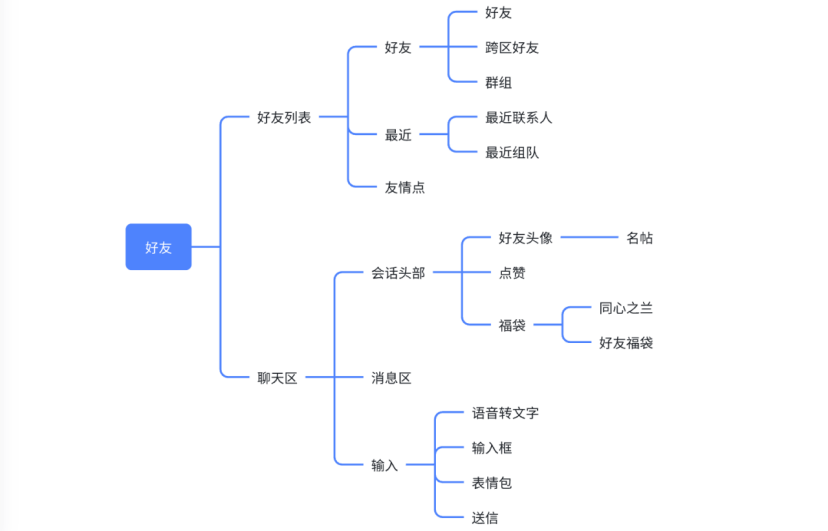
2.3 添加界面
2.3.1 图片
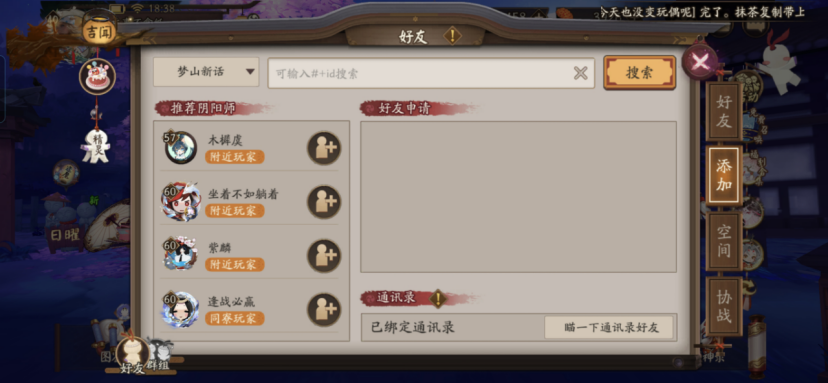
2.3.2 分析
设计目的
提供多元化拓展关系的渠道，帮助玩家发现和建立新的社交关系
设计思路
多入口并行
1. 搜素功能&扫描：精准搜索，帮助有直接添加好友需求的玩家精准快速的建立联系；
2. 系统推荐：筛选有一定联系的玩家，降低添加好友的门槛，鼓励社交保守或者没有明确社交目标的玩家建立新的社交关系；
群组功能拆分
1. 群组：设置独立入口和管理逻辑，不混入个人好友池，玩家可以通过群组分类社交的类别，防止社交扩大后复杂度上升；
系统概述
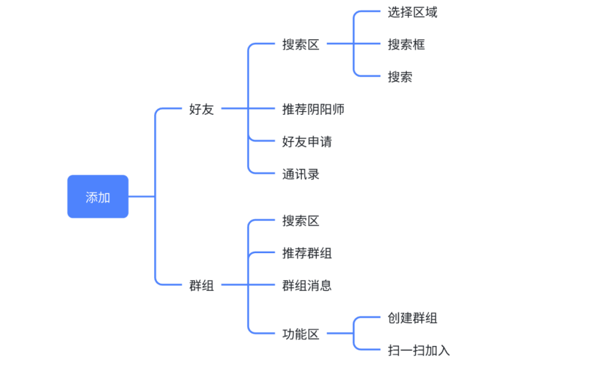
2.4 空间界面
2.4.1 图片
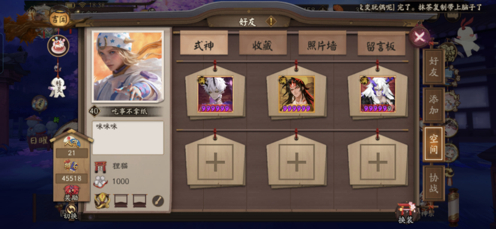
2.4.2 分析
设计目的
提供一个低干扰的的自我展示和互动空间，提供持续性的互动场景
设计思路
展示个人游戏成果
1. 个人展示区：玩家通过装扮空间、发布动态来经营个人形象；通过浏览他人空间、点赞留言进行非即时互动；权限设置让玩家掌控社交边界，这些个人展示将游戏成就与审美转化为社交吸引力，构建了一个立体的玩家形象；
2. 留言板：留言板创造了无需同时在线也能持续互动的场景，深化情感连结；
系统概述
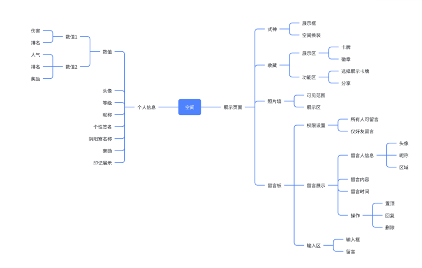
2.5 协战界面
2.5.1 图片
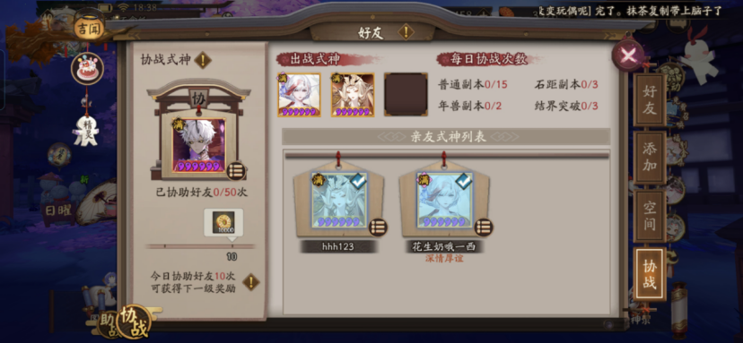
2.5.2 分析
设计目的
将好友关系转化为可被感知、可被量化的玩法助力，让社交价值直接反馈到核心玩法中。
设计思路
信息透明化，提升互惠意识
数据展示：界面上会明确展示协助的次数、进度和使用记录，玩家明确了”帮了什么，被帮了什么“，促进人际往来互惠；
系统概述
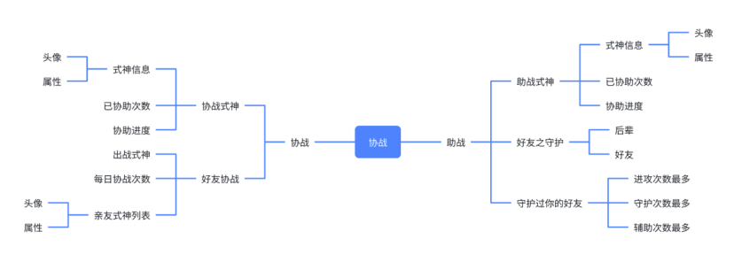
3. 外观活动
3.1 活动分析
活动目的：
1. 促进日活，提供持续上线的动力
2. 鼓励玩家之间的交互，为春节活动做铺垫
活动时间：1月28日维护后―2月10日23:59；全天开启，每日凌晨刷新任务
活动对象：15级以上的玩家
活动入口：点击主界面“皮肤领取”进入/点击主页面“活动总览”进入
活动内容：活动期间通过邀请好友助力，或完成每日指定任务获取【藤原宝玉】，收集满100个【藤原宝玉】可免费领取【藤原道长·闲问兰音】皮肤
3.2 皮肤展示区
3.2.1 图片
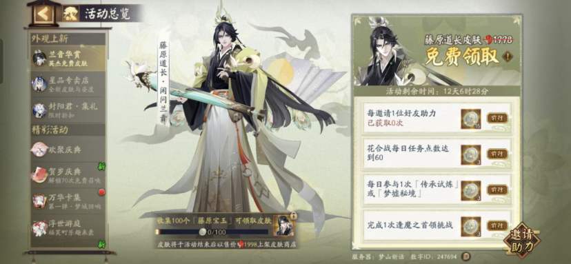
3.2.2 分析
设计目的
1. 提升皮肤视觉价值感知
2. 提供持续的动力渠道
设计思路
强化视觉核心，提升皮肤视觉价值感知
动态展示：通过高比例、可旋转的动态模型展示皮肤细节，将皮肤作为界面的视觉中心，使玩家在短时间内完成对皮肤品质与完成度的直观判断，不仅满足玩家的观赏需求，也通过反复查看行为加深对皮肤的情感印象，为后续获取行为提供正向动机基础；
引导活动节奏，提供持续的动力渠道
可视化进度：将最终目标拆解为多个可重复完成的日常任务，并统一转化为活动代币的累积过程，使玩家关注点从单次任务完成转向整体进度推进，降低中断参与带来的挫败感；
系统概述
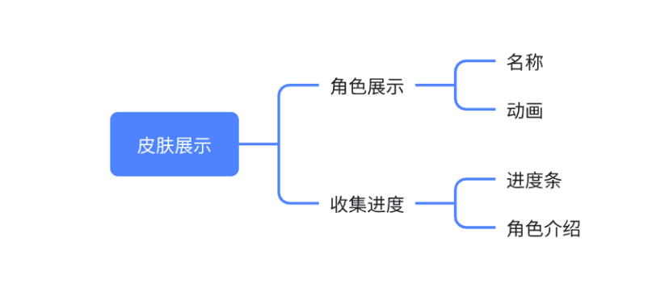
3.3 任务区域
3.3.1 图片

3.3.2 分析
设计目的
1. 提供低门槛入口，维持参与节奏
2. 提供多样的途径，拓宽参与范围
设计思路
提供低门槛入口，维持参与节奏
1. 活动代币：用活动限定资源隔离活动进度与其他系统的影响，以统一不同玩家的参与起点；并通过每日获取上限控制进度速度，引导玩家形成相对稳定的参与节奏；
2. 任务列表：用纵向列表形式集中展示当前可执行行为和奖励反馈，并提供清晰的条件描述和一键跳转入口，减少决策与操作成本，引导玩家更容易开始并持续参与活动；
3. 全局倒计时：明确展示活动剩余的时间，引导玩家建立参与周期的整体预期，形成相对稳定的参与节奏，而非临时被动补做；
提供额外的途径，拓宽参与范围
4. 邀请助力：通过“邀请助力”等可选社交任务，引导玩家利用既有社交关系参与活动传播，但不将社交行为设为获取皮肤的唯一或核心路径，避免对低社交意愿玩家造成排斥；
系统概述
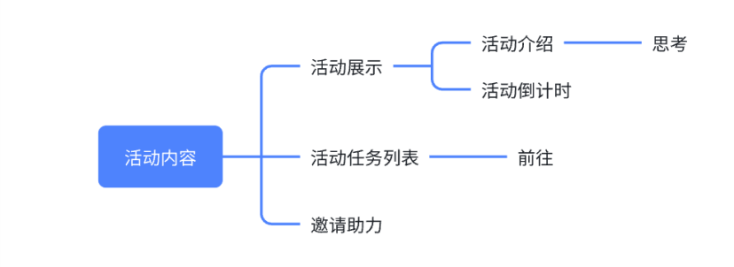